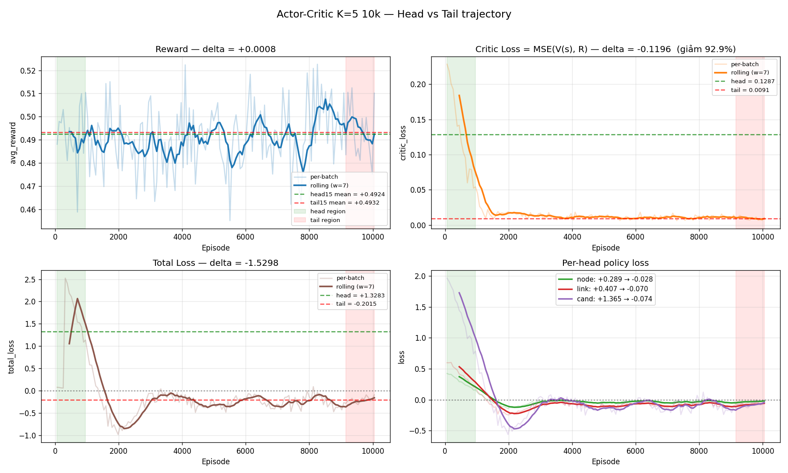
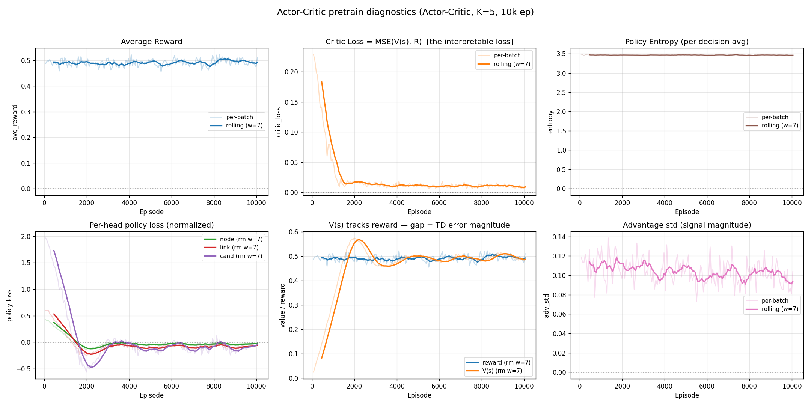
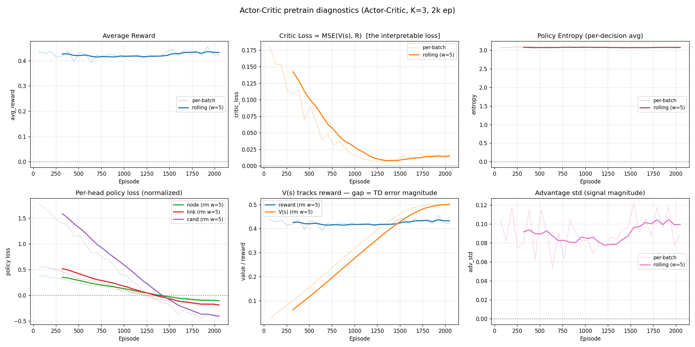
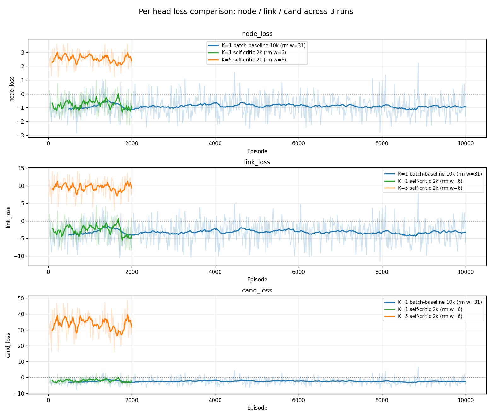
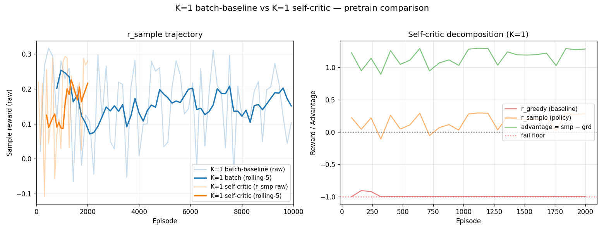
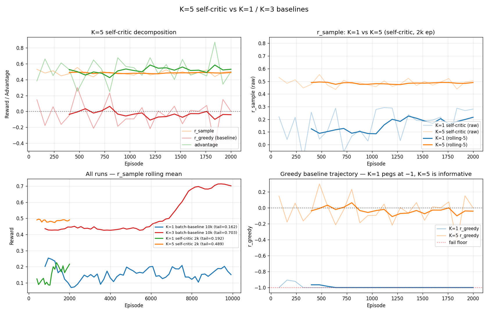

Virtual Network Embedding (VNE): gán một virtual network (VN) — gồm virtual nodes (yêu cầu CPU) và virtual links (yêu cầu bandwidth) — vào một substrate network (mạng vật lý) sao cho tổng chi phí tối thiểu, ràng buộc tài nguyên không vi phạm.
Trường hợp fail (thiếu CPU/BW, không có candidate, multi-path không đủ): $r = -1.0$
Đặc tính quan trọng: revenue chỉ phụ thuộc VN (fixed per request), cost phụ thuộc mapping. R/C ratio tự normalize cho VN size, nhưng vẫn có per-VN variance lớn do random topology + demand mix → đây là gốc rễ của vấn đề "VN A có reward 0.5 vs VN B có reward 0.15 không cùng scale".
5. Loss Function — Quá trình tiến hóa
Loss đã trải qua 4 phiên bản trong project, mỗi phiên bản giải quyết một vấn đề cụ thể:
Với $c_v = 0.5$, $\beta = 0.01$. trainer.py:74-135.
5.5 So sánh trực quan dấu loss
Run
node_loss
link_loss
cand_loss
critic_loss
Cov(A, log π)
Có nghĩa diễn giải?
K=1 batch-baseline 10k
−1.0
−3.5
−2.7
—
dương nhẹ
Không
K=5 self-critic 2k
+2.5
+9.4
+33
—
âm (collapse)
Không
K=5 Actor-Critic 10k
−0.03
−0.07
−0.07
0.009
dương
CÓ
6. Root Causes — Vì sao model không học?
#
Vấn đề
Mức độ
Fixed?
1
PSO áp đảo policy contribution ở K≥5
Rất cao
Không (kiến trúc)
2
total_loss mất cân đối — cand có 5-10× terms
Cao
Fix A normalize per-head
3
Credit assignment 3 head + 1 scalar reward
Trung-Cao
Không (multi-step MDP cần)
4
VN sampling noise lấn policy signal
Cao
Fix B Actor-Critic V(s)
5
batch_size = 16 quá nhỏ
Trung
Fix C tăng lên 64
6
Không có entropy regularization
Trung
Fix D thêm −β·H
4/6 vấn đề đã fix. 2 vấn đề kiến trúc (1, 3) cần đại tu pipeline để fix dứt điểm.
7. Kết quả thí nghiệm
7.1 Bảng tổng hợp 6 run chính
Run
K
Baseline
Ep
Tail reward
Critic loss
Thời gian
v2_10k
3
batch-mean
10k
0.70
—
1h05m
k1_10k
1
batch-mean
10k
0.17
—
1h49m
k1_selfcrit_2k
1
greedy-rollout
2k
0.19
—
15m
k5_selfcrit_2k
5
greedy-rollout
2k
0.49
—
22m
ac_k3_2k
3
V(s) critic
2k
0.43
0.01 → 0.05
15m
ac_k5_10k
5
V(s) critic
10k
0.49
0.13 → 0.009 (−93%)
1h41m
7.2 K=5 Actor-Critic Head→Tail trajectory

Reward
0.49
head 0.4924 → tail 0.4932 delta +0.0008
Flat — đã chạm trần kiến trúc
Critic Loss
0.009
head 0.1287 → tail 0.0091 delta −92.9%
Loss có nghĩa, giảm hoàn hảo
Entropy
3.46
Stable suốt 10k ep
Không collapse
Total Loss
−0.20
head +1.33 → tail −0.20 sign flip ✓
Cov(A, log π) flip dương
7.3 K=5 Actor-Critic diagnostics đầy đủ

7.4 K=3 Actor-Critic 2k (proof of concept)

7.5 So sánh per-head loss giữa các run

7.6 K=1 batch-baseline vs K=1 self-critic

Panel phải cho thấy r_greedy luôn pegged ở −1 (baseline collapse) → advantage chỉ là constant shift. Đây là lý do K=1 self-critic không hoạt động.
7.7 K=5 self-critic vs Actor-Critic decomposition

8. Kết luận
Đã đạt:
Loss có nghĩa diễn giải — critic_loss giảm từ 0.13 → 0.009 (giảm 93%), supervised-style curve
V(s) hội tụ chính xác về reward (0.49 vs 0.49)
Per-head loss balanced — không còn cand áp đảo
Entropy không collapse — policy còn explore
Advantage signal liên tục tồn tại — không bị std-collapse
Chưa giải quyết:
Reward tuyệt đối plateau ở K=5 do Root cause #1: PSO + K=5 candidate đã đẩy reward lên gần trần ngay từ episode đầu, policy không có headroom cải thiện
Credit assignment 3-head (Root cause #3): cần tái cấu trúc thành multi-step MDP
Tóm tắt cho giảng viên
"Hàm loss REINFORCE ban đầu không có ý nghĩa diễn giải. Em đã chuyển kiến trúc sang Actor-Critic với value head V(s, θ_v), critic loss MSE(V(s), R) đóng vai trò supervised regression — loss này giảm đơn điệu từ 0.13 xuống 0.009 trong 10k episode, V(s) hội tụ chính xác về reward thực. Đồng thời giải quyết vấn đề per-instance baseline (VN A reward 0.5 vs VN B reward 0.15) bằng cách dùng V(s) làm baseline thay batch-mean. 4/6 root causes đã fix; 2 vấn đề kiến trúc còn lại (PSO áp đảo ở K cao, credit assignment 3 head) cần đại tu pipeline."
Future work
Giảm vai trò PSO hoặc thay bằng pointer-network để policy đóng vai trò chính
Tái cấu trúc thành multi-step MDP: mỗi step embed 1 vnode, state evolves
Curriculum learning: bắt đầu với VN nhỏ rồi tăng dần độ phức tạp
Tune $\beta$ (entropy_coef) — có thể decay theo episode để exploit nhiều hơn về sau